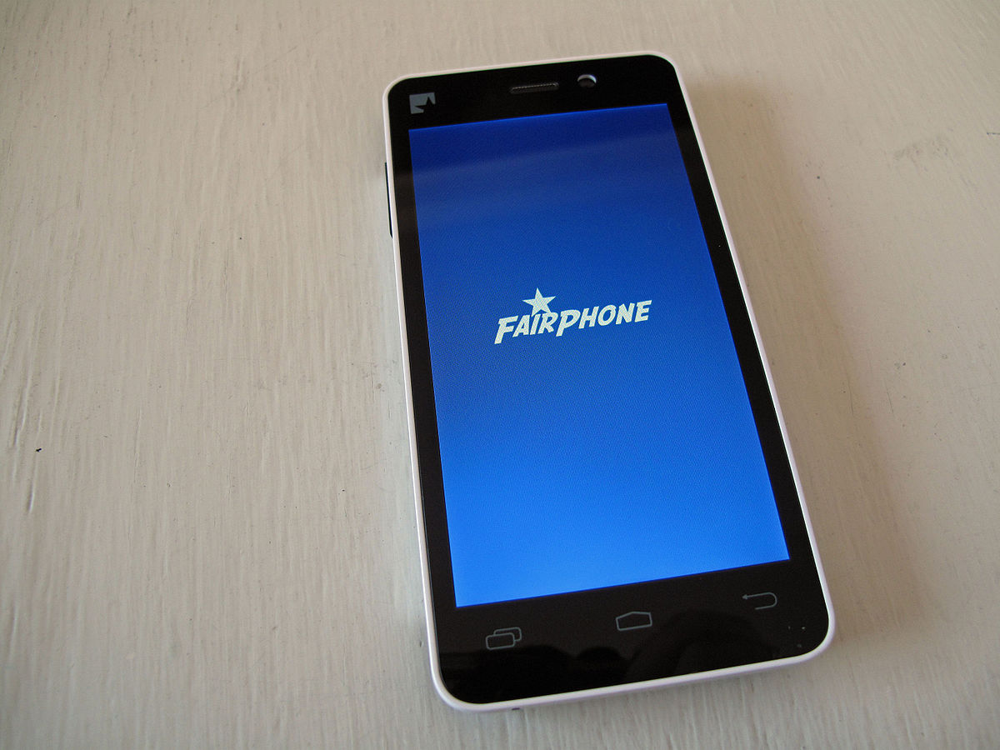

Fairphone 1 (fairphone-fp1)
Jump to navigation
Jump to search
|
 Fairphone 1 | |
| Manufacturer | Fairphone |
|---|---|
| Name | 1 |
| Codename | fairphone-fp1 |
| Released | 2013 |
| Category | testing |
| Original software | Android 4.2 |
| postmarketOS kernel | 3.4.5 |
| Hardware | |
| Chipset | MediaTek MT6589 |
| CPU | 4x 1.2 GHz Cortex-A7 |
| GPU | PowerVR SGX544MP @ 286 MHz |
| Display | 960x540 IPS |
| Storage | 16 GB |
| Memory | 1 GB |
| Architecture | armv7 |
{kind=link}
| USB Networking |
Works
|
|---|---|
| Flashing | |
| Touchscreen |
Works
|
| Display |
Works
|
| WiFi |
Broken
|
| FDE | |
| Mainline |
Partial
|
| Battery | |
| 3D Acceleration | |
| Audio | |
| Bluetooth | |
| Camera | |
| GPS | |
| Mobile data | |
| SMS | |
| Calls | |
| USB OTG | |
| NFC | |
| Accelerometer | |
|---|---|
| Magnetometer | |
| Ambient Light | |
| Proximity | |
| Hall Effect | |
| Barometer | |
| Power Sensor | |
| Camera Flash | |
|---|---|
| Keyboard | |
| Touchpad | |
| USB-A | |
| HDMI/DP | |
| Ir TX | |
| Ir RX | |
| Stylus | |
| Haptics | |
| Ethernet | |
| FOSS bootloader | |
Contents
Contributors
- Luca Weiss (z3ntu)
Maintainer(s)
- Luca Weiss (z3ntu)
Installation (Android Recovery Zip)
pmbootstrap install --android-recovery-zip --recovery-install-partition data- Flash the resulting zip using the latest CWM build from chrmhoffmann
Installation (only boot partition)
- Flash the newest lk.bin (see https://github.com/z3ntu/android_kernel_fairphone_FP1/wiki/More-stuff#fastboot)
- Press vol-up during booting and select "fastboot"
- You can now flash the boot partition with "fastboot flash boot boot.img-fairphone-fp1"
Installation (SP Flash Tool)
- Load the MT6589_Android_scatter_emmc.txt with SP Flash Tool (e.g. v5.1352.01)
- Deselect all partitions and choose boot.img-fairphone-fp1 for the BOOTIMG and fairphone-fp1.img for the USRDATA partition.
- Press 'Download' and plug in your phone while it's turned off
See also
- #1566 Initial pull request
- !1623 Initial pull request (reopened)
- Kernel source